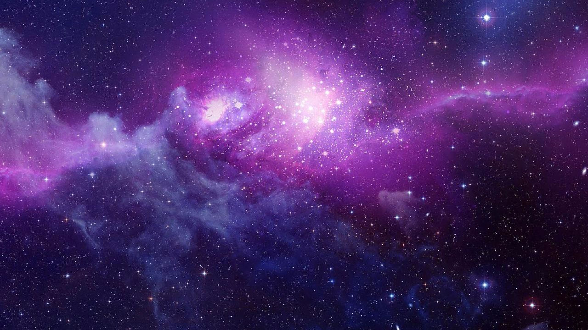
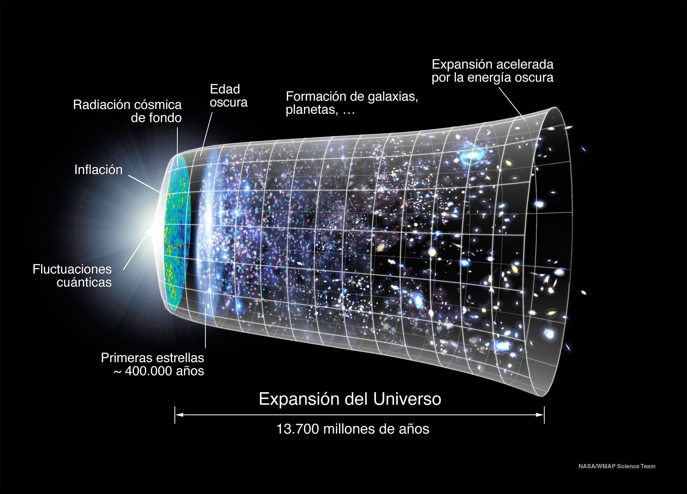

EL UNIVERSO

El Universo es muy grande, pero quizás no infinito. Si lo fuera, habría infinita materia en infinitas estrellas, y no es así. Al contrario: en cuanto a la materia es, sobre todo, espacio vacío. Hay quien incluso afirma que el Universo en el que vivimos no es real, que es un holograma.
del Universo, de frío (azul) a caliente (rojo)
El Universo conocido contiene galaxias, cúmulos de galaxias y estructuras de mayor tamaño llamadas supercúmulos, además de materia intergaláctica. Todavía no sabemos con exactitud su magnitud, a pesar
la avanzada tecnología disponible en la actualidad.
La materia no se distribuye de manera uniforme, sino que se concentra en lugares concretos: galaxias, estrellas, planetas... Sin embargo, se supone que el 90% de lo que existe es una masa oscura, que no podemos observar.
El Universo es todo lo que podemos tocar, sentir, percibir, medir o detectar. Abarca los cosas vivas, los planetas, las estrellas, las galaxias, las nubes de polvo, la luz e incluso el tiempo. Antes de que naciera el Universo, no existían el tiempo, el espacio ni la materia.
El Universo contiene miles de millones de galaxias, cada una con millones o miles de millones de estrellas. El espacio entre las estrellas y las galaxias está en gran parte vacío. No obstante, incluso en sitios alejados de las estrellas y los planetas hay partículas dispersas de polvo o unos pocos átomos de hidrógeno por centímetro cúbico. El espacio también está lleno de radiación (por ejemplo, luz y calor), campos magnéticos y partículas de alta energía (como los rayos cósmicos).
HISTORIA

La teoría que mejor explica cómo se formó el universo es la teoría del big bang. Esta teoría establece que en sus inicios todo el universo completo se concentraba en un mismo lugar, dando lugar a la expansión del universo. Al principio, el universo era muy pequeño y denso. A este estado se le conoce como bola de fuego primaria. Durante el primer segundo solo podían existir partículas elementales como los protones, neutrones y electrones. Pero el universo se enfrió y expandió rápidamente.
Durante los siguientes 500 000 años, la radiación electromagnética (luz) era lo más importante en el universo, por lo que es conocida como la era radiación. Cuando el universo se enfrió al punto donde los átomos más simples (hidrógeno) se pudieron formar, la radiación dejó de dominar y la materia prevaleció. La radiación de fondo de microondas fue producida en este momento. Así comenzó la era de la materia , en donde actualmente existe el universo.
La edad del universo, de acuerdo con la teoría del big bang (gran explosión), es el tiempo histórico del universo definido por su enfriamiento y expansión desde su densidad singular en la gran explosión. El consenso de los científicos contemporáneos es de unos 13 798 ± 37 millones de años,8 es decir que la edad del universo está comprendida entre 13 761 y 13 835 millones de años.